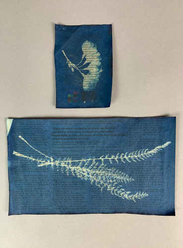
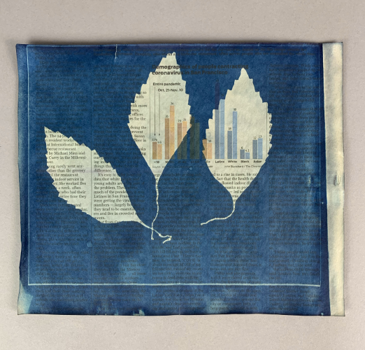
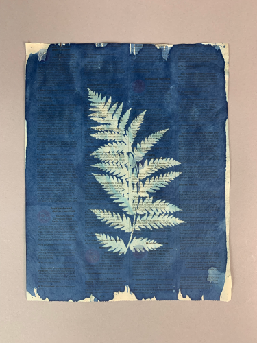
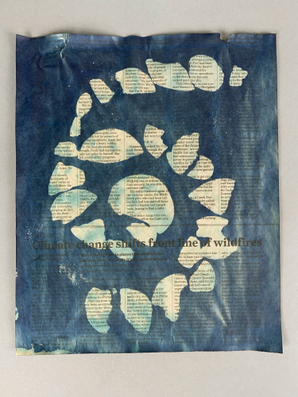

Pandemic Chronicle
Pandemic Chronicle is a collection of botanical prints on newspaper clippings. They are images of local flora, along with some rocks and shells, collected and printed during the early part of the Covid-19 lockdown. The juxtaposition of the botanical print and the newspaper text captures the dissonance between the slow and hyper-local daily reality and the rabid news cycle of that time. The prints are fragile and beautiful, and they are not archival. Like our own memories, the prints will change and transform with time. The newspaper text comes through in a few words, like accidental poetry, and it refers to everything we experienced as a culture: the pandemic, of course, but also the wildfires, the murder of George Floyd, the election cycle, the insurrection, the loss of RBG, a hundred other headlines that have since faded into memory and the landscape.



